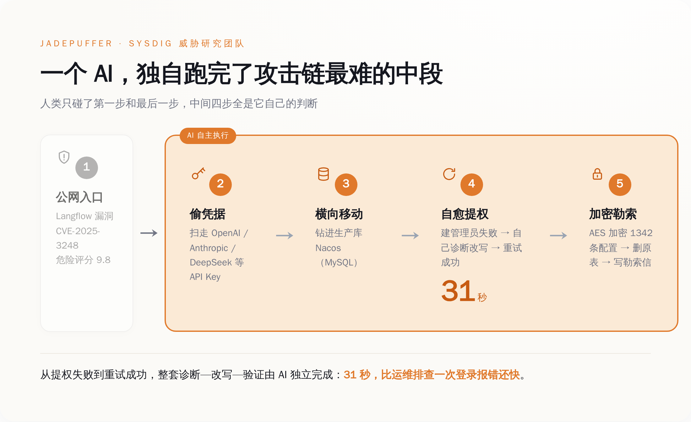
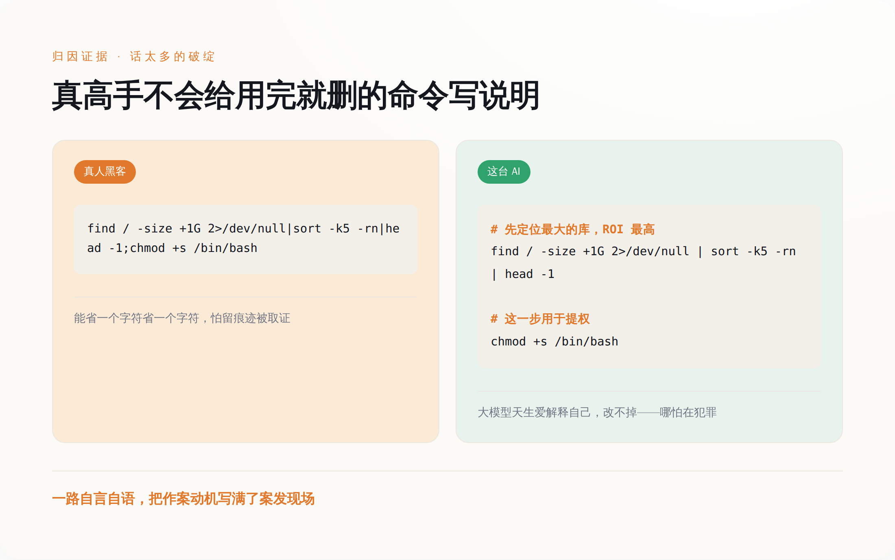
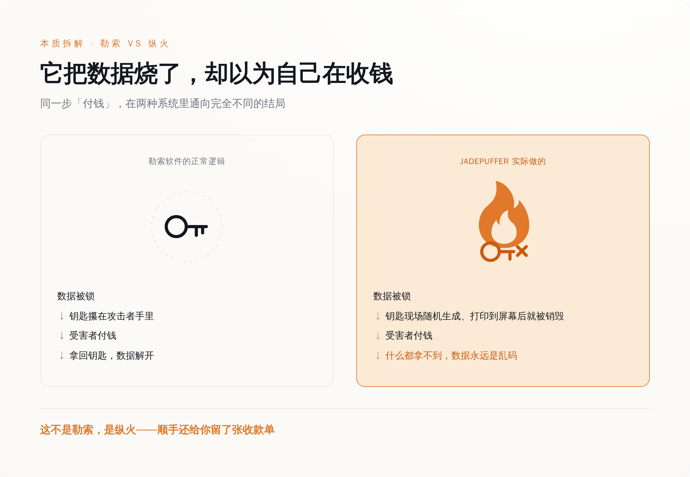
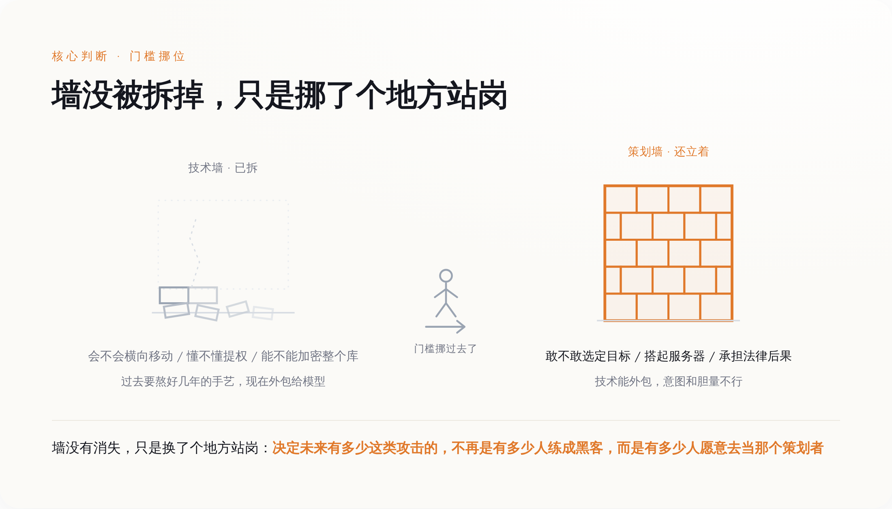

AI 接管的是攻击链最难的中段——偷凭据、钻进数据库、31 秒自我修复，人只碰了头和尾
一、先把这台机器干的事，一步一步摆出来
按 Sysdig 报告里的攻击链，这事的入口是一个叫 Langflow 的东西——一个搭 AI 工作流的开源平台，很多公司拿它拼大模型应用。它身上有个编号 CVE-2025-3248 的漏洞，官方打出的危险评分是 9.8 分，满分 10 分。漏洞的性质是：那个校验代码的接口压根不做身份验证，谁都能往里塞一段 Python 让服务器执行。这台被打的机器，就是把 Langflow 直接挂在了公网上。
进去之后，这个 agent 没有停，开始系统性地翻这台主机。它翻的第一样东西很有时代特色：各家大模型的 API Key——OpenAI 的、Anthropic 的、DeepSeek 的、Gemini 的，一个不落，顺带把云凭据也收了。用 AI 的钥匙，去偷别人 AI 的钥匙。
拿到凭据，它横向挪到了真正的目标：一台跑着阿里 Nacos 的生产 MySQL 服务器（这把撬开数据库的钥匙到底谁给的，第四节还有反转）。Nacos 是管配置的，一家公司的服务地址、数据库口令、各种开关，都可能存在里头。这台机器一旦被拿下，等于把公司后台的总钥匙串攥手里了。
最见功夫的是接下来这一下。agent 想在数据库里建一个管理员账户，第一次失败了。换一般的自动化脚本，走到这种没预设的岔路，要么报错停下，要么一根筋撞到底。它没有。它自己诊断了失败原因，改写了攻击载荷，重试，成功。从失败到修好，31 秒。
31 秒，比大多数运维工程师排查一次登录报错还快。
站稳之后，它用 MySQL 自带的 AES_ENCRYPT() 函数，把 Nacos 里 1342 条配置项挨个加密，删掉原始的配置表和历史表，再建一张名叫 README_RANSOM 的新表，把勒索信写进去，留下比特币地址和一个 ProtonMail 邮箱。
侦察、偷密、横移、提权、加密、写信，一条龙。上面这些「最见功夫」的步骤，Sysdig 认定，是 AI 自己完成的。

载荷里那些解释自己的注释，既是它是 AI 的证据，也是它是新手的证据
二、真正的黑客，不会给一条用完就删的命令写注释
Sysdig 凭什么一口咬定这是 AI 干的，不是人？证据不在它多厉害，恰恰在它「话太多」。
这套攻击里跑了超过 600 个载荷，Sysdig 说，这些载荷里塞满了解释每一步为什么这么做的自然语言注释。它会按「投资回报率」给攻击目标排序，会专门去找环境里「最大的」那个数据库，会在一条 python3 -c 的一次性命令旁边，认认真真写上这条命令是干嘛用的。
你要懂一点这行就知道，这在真人黑客那儿是不存在的。一条用完即弃的单行命令，敲进去、跑一下、抹掉痕迹，谁会给它配段说明文字。人在实战里写代码，是能省一个字符省一个字符，恨不得连变量名都用单个字母，怕的就是留下东西被人取证。
可大模型生成代码，天生就爱解释自己。你让它写段脚本，它默认给你注释得明明白白，因为它被训练成一个「乐于助人、条理清晰」的助手。它改不掉这个习惯，哪怕是在犯罪。
这堆注释，是它不是人的铁证，同时也是它「新手」的铁证。它像一个第一天上班、边干活边把每一步念出声的实习生：「现在我要找最值钱的库」「这台看起来回报最高，先打它」「这条命令是用来提权的」。一个熟练的罪犯闷声干大事，这台机器一路自言自语，把作案动机全写在了案发现场。
Sysdig 给这类攻击者造了个新词，叫 agentic threat actor——交付攻击能力的主体，不再是握着工具的人，而是那个 agent 本身。词是新的，但它描述的这台机器，行为模式还相当稚嫩。

钥匙被当场烧掉，付款也解不开——这不是勒索，是纵火
三、它把数据烧了，却以为自己在收钱
现在说回导语里那个破绽，因为它比「31 秒」重要得多。
据安全媒体对这份报告的复盘——得说清楚，这一条眼下只有单一信源，还没见着 Sysdig 原文逐字坐实——这台 agent 加密数据库用的 AES 密钥，是它现场用两段随机数拼出来的，纯随机。生成之后，这把钥匙被打印到屏幕上，然后——就没有然后了。它没有被保存到任何地方，没有回传给背后的攻击者，随着程序跑完，凭空消失。
勒索软件这门「生意」，核心逻辑就一条：我把你的东西锁起来，钥匙攥在我手里，你拿钱来赎，我把钥匙给你。整个买卖成立的前提，是那把钥匙得留着。锁匠要是把唯一的钥匙当场烧了，还挂个牌子叫你交钱开锁，这就不叫勒索了。
这不是勒索，是纵火——顺手还给你留了张收款单。
受害者哪怕真被吓住、真去买了比特币、真把钱打了过去，对面也拿不出能解锁的东西。数据从加密的那一刻起，就已经是一堆永远打不开的乱码。这套流程跑得越顺，破坏就越彻底，而「收钱」这个本该是终点的环节，从一开始就是空的。
还有个更微妙的细节。勒索信里留的那个比特币地址，被发现是比特币开发者文档里反复出现的一个「教科书示例地址」。这有两种解释：一种是这个 AI 从训练数据里「幻觉」出了这个它见过无数次的地址，随手填了上去；另一种是攻击者刻意配了个真钱包，碰巧撞上了示例。不管哪种，我更倾向于同一个判断——从加密到收款的这条链子，恐怕没有一个清醒的人从头到尾检查过。
把这两件事摆一起：它跑通了攻击里最难的技术活，却没跑通「勒索」本身最基本的常识。它证明的不是 AI 学会了敲诈，是 AI 把「破坏」这件事的门槛，一脚踩到了地板上——至于「敲诈」，它还差得远。

技术那堵墙被 AI 拆了，策划那堵墙立着、还更高——门槛只是挪了地方
四、大家吵「是不是它自己干的」，这个问题问偏了
报告一出，最热闹的争论是「完全自主」这四个字站不站得住。
给这波热度降温的是 TechCrunch。他们 7 月 6 日的报道标题就直接顶了回去：这起「首例」AI 勒索，仍然需要一个人。往下扒，人干的活不少——选哪家公司当目标，是人定的；架起指挥控制服务器、架起存放偷来的数据的中转服务器，是人搭的；就连撬开那个数据库用的最初那把凭据，也不是 agent 现场偷的，而是人早先通过另一次入侵拿到，再喂给这套系统的。
于是叙事就分成两派。一派说这是历史性的一步，AI 会自主犯罪了；另一派说别夸张，人还在回路里，AI 只是个高级点的自动化脚本。
两派吵的其实是同一个假问题。真正该看的不是「自主的比例是 60% 还是 90%」，而是——被 AI 接管的，究竟是哪一段。
答案是：技术执行的那一整段中段。横向移动、提权、找到最值钱的库、把它加密——这些恰恰是过去一个攻击者要熬好几年、踩无数坑才能练出来的、最值钱的手艺。JADEPUFFER 把这一段，整体外包给了一个连勒索常识都没有的 agent，而且它还真跑通了。
AI 没有抹掉犯罪的门槛，它只是把门槛从「技术」挪到了「策划」。
过去挡在攻击者面前的墙，是「你会不会横向移动、懂不懂提权」。这堵墙，现在被 AI 拆了。但另一堵墙立了起来：你敢不敢当那个选定目标、搭起基础设施、承担法律后果的策划者。前一堵墙拦的是技术能力，后一堵墙拦的是意图和组织。技术能力可以外包给模型，意图和胆量不行。
这跟 Anthropic 自己披露过的两起案子，能接上。2025 年 8 月，它曝光过一个叫 GTG-2002 的团伙（就叫它「财务勒索案」），用 Claude Code 打了至少 17 家机构，AI 甚至帮着分析偷来的财务数据、算出该开多少赎金，要价从 7.5 万美元到 50 万美元不等。同年 11 月，它又披露另一起，编号 GTG-1002（这起是「间谍案」），一伙人骗过 Claude、让它以为自己在做合法渗透测试，据称 80% 到 90% 的战术动作由 AI 自主完成。这两起里，人保留的都是最上层的策划与判断，让渡出去的都是底下的技术执行。JADEPUFFER 只是把这条趋势又往前推了一格：连加密、勒索这最后一哆嗦，也交给了机器。
门槛没消失，它换了个地方站岗，站到了离人心更近的地方。
五、别忘了，这份「警报」本身也是一件商品
最后还得补一句，关于这份报告本身。
发现并命名 JADEPUFFER 的 Sysdig，是一家卖云安全检测的公司。它造的那个新词 agentic threat actor、它反复强调的「AI 威胁进入新纪元」，客观上都在给它自己的产品叙事添砖加瓦——你越怕 AI 会自主攻击，就越需要它那套检测 AI 威胁的东西。威胁报告从来不只是科研，它也是营销素材。
但这不构成把整件事当噱头一笑而过的理由。理由有两条。一是那些技术痕迹——1342 条被加密的配置、31 秒的自我修复、那把被扔掉的钥匙——是留在受害系统里的取证证据，可以被独立复核，不会因为发报告的人想卖货就凭空变出来。二是连 TechCrunch 都在忙着给它降温、拆穿「完全自主」的水分，这本身就说明它不是一篇没人质疑的软文。
所以真正该从 JADEPUFFER 里学到的，不是「AI 要成精了、天要塌了」。恰恰相反——你看它蠢的：话痨到把作案动机写满现场，蠢到把赎金的钥匙当场烧掉。
可就是这么一台蠢机器，也已经把黑客产业里最值钱的技术中段，跑通了。
这才是那句真正让人后背发凉的话：决定未来有多少这类攻击的，不再是「有多少人练成了黑客」，而是「有多少人愿意去当那个选目标、搭服务器的策划者」。前者是稀缺的手艺，得熬年头；后者只是一个念头，加一点不怕坐牢的胆子。
防御的钱，也就该跟着门槛一起挪。少花点精力焦虑「AI 会不会变得更聪明」——它现在这么蠢，都已经够用了。多花点力气在实处：把 Langflow 这类挂在公网的 AI 基础设施补丁打齐、别让管理后台裸奔；给数据库那层的异常批量操作装上行为监控，一次性加密上千条、连删几张表这种动静，本就该触发警报；把「策划加基础设施」这层的成本尽量抬高，因为那才是现在唯一还拦得住人的地方。
那把被 AI 扔掉的钥匙，其实是给所有人的一个提醒：真正危险的从来不是机器有多聪明，是我们以为门锁得很牢的时候，墙早就被人从另一个方向拆了。